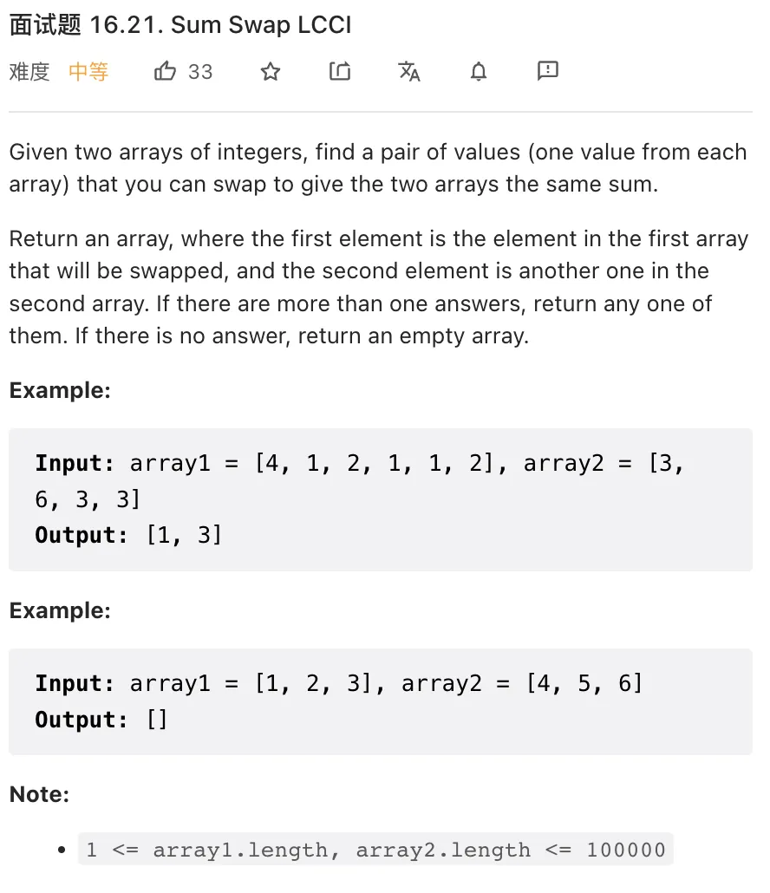

面试题 16.21. 交换和
Question

先自己想想看 🤔Try it yourself first 🤔
✍🏽 My Solution
执行用时：6 ms, 在所有 Java 提交中击败了47.24%的用户
内存消耗：53 MB, 在所有 Java 提交中击败了5.89%的用户
class Solution {
public int[] findSwapValues(int[] array1, int[] array2) {
int sum1 = 0;
int sum2 = 0;
HashSet<Integer> set = new HashSet<>();
for (Integer arr : array1) {
sum1 += arr;
set.add(arr);
}
for (Integer arr : array2) {
sum2 += arr;
}
int total = sum1 + sum2;
if (total % 2 != 0) { // 奇數無解
return new int[]{};
}
int diff = total/2 - sum2;
for (Integer arr : array2) {
int target = arr + diff;
if (set.contains(target)) {
return new int[] {target, arr};
}
}
return new int[]{};
}
}
🧠 Thought Process
- Why did I choose this particular implementation?
- 哈希表，參考王爭思路
- What is the time/space complexity of my solution? How do I know?
- time: O(n+m)
- space: O(m)
Solution #1 [王爭-哈希表]
执行用时：182 ms, 在所有 Java 提交中击败了6.10%的用户
内存消耗：49.2 MB, 在所有 Java 提交中击败了98.62%的用户
class Solution {
public int[] findSwapValues(int[] array1, int[] array2) {
int sum1 = 0;
// 計算數組1的和
for (Integer arr : array1) {
sum1 += arr;
}
// 計算數組2的和，並將元素放到哈希表中
int sum2 = 0;
HashSet<Integer> set = new HashSet<>();
for (Integer arr : array2) {
sum2 += arr;
set.add(arr);
}
// sum1+sum2如果是奇數無解
int total = sum1 + sum2;
if (total % 2 == 1) {
return new int[0];
}
// 遍歷數組1的每個元素，在哈希表中查找
int diff = total/2 - sum1;
System.out.println(diff);
for (Integer arr : array1) {
int target = arr + diff;
System.out.println(target);
if (set.contains(target)) {
return new int[] {arr, target};
}
}
return new int[0];
}
}
Explanation (in my words)
-
How does their solution work?
- 將兩個數組的總和加起來一定要是偶數，交換才有可能使兩個數組的元素和相等，所以如果是奇數就直接返回空數組
-
兩個數組加起來的和除以2，將兩個數組的和變成除以2
例如 一個數組加起來是11 另一個數組是15，那兩個數組的和都要變成13
所以 a 要跟 a+2 交換，兩個數組各自的和就會變成13了
-
What is the space/time complexity of their solution?
- time: O(n+m)
- space: O(m)